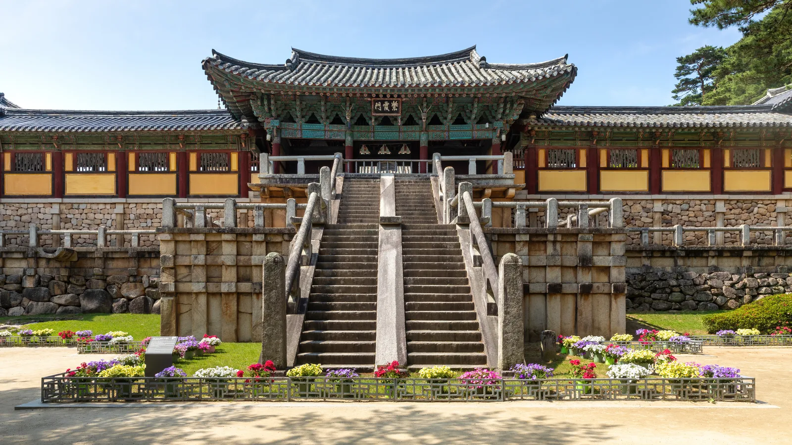
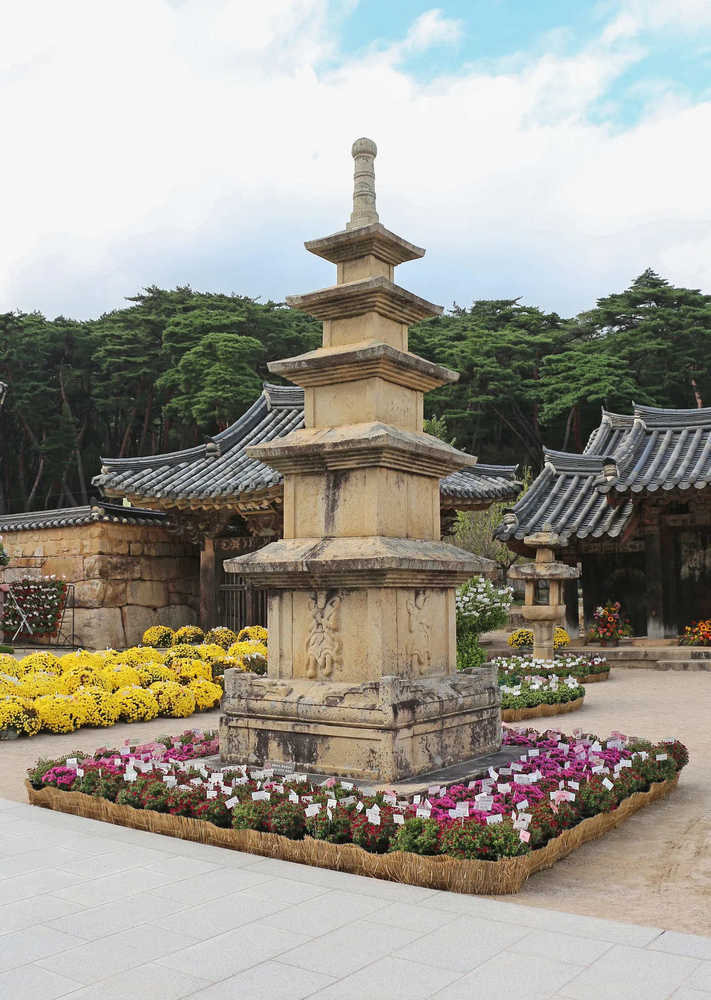
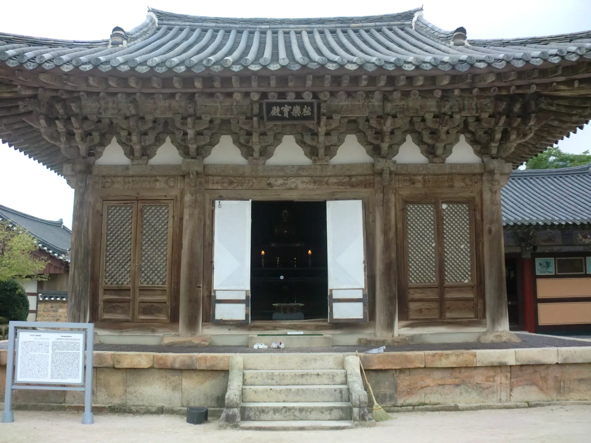
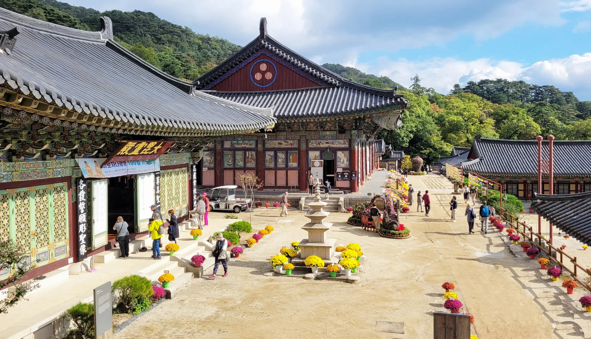
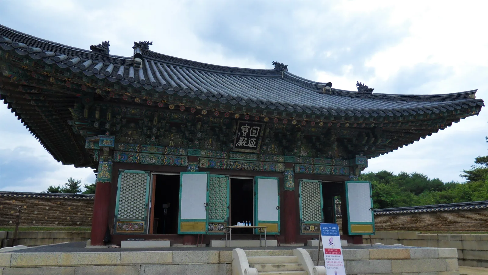
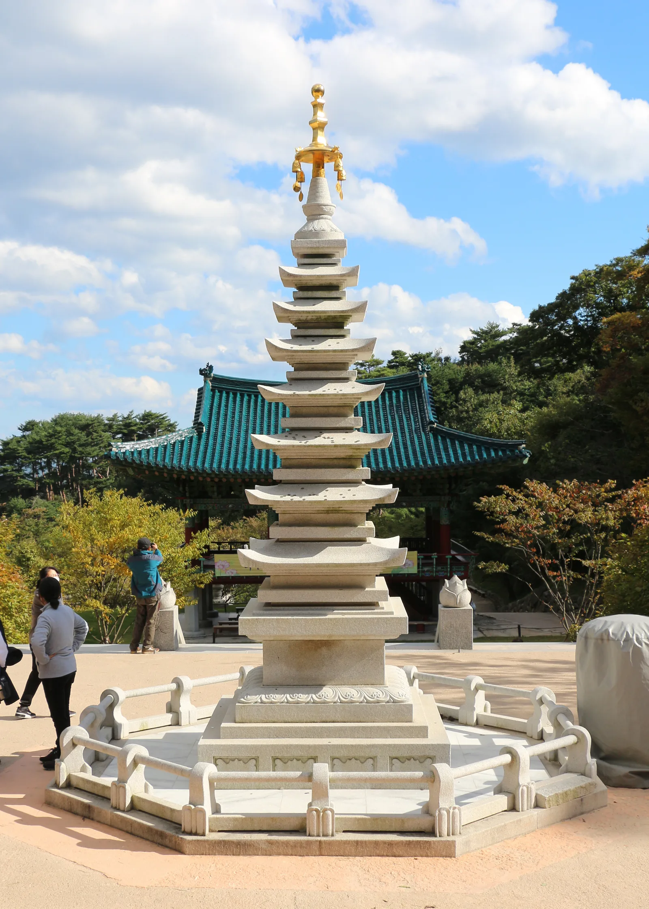
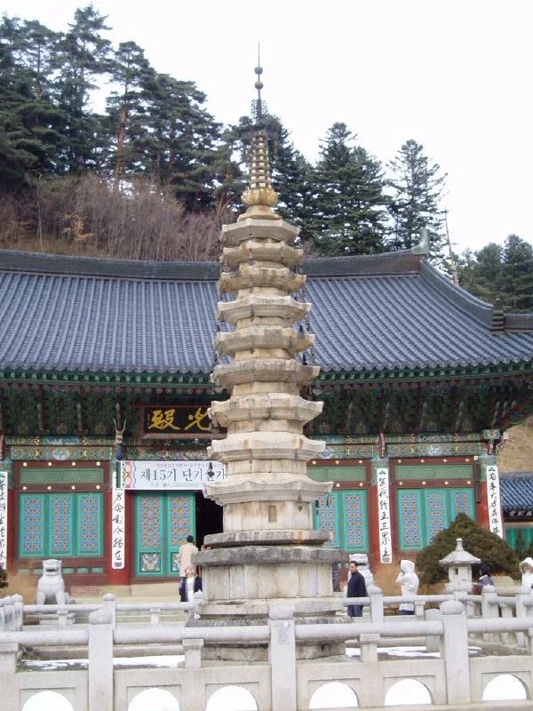

▲ 경주 불국사. 세계문화유산으로 지정된 대표 템플스테이 사찰 중 하나다
가을 단풍철 사찰 마당은 평소보다 사람이 몇 배는 많다. 문제는 템플스테이 예약이다. 인기 사찰의 인기 일정은 예약 페이지가 열리는 순간 마감되기 일쑤고, 프로그램 유형에 따라 참가비도 3만원대부터 10만원대까지 벌어진다. 한국불교문화사업단이 운영하는 공식 사이트 templestay.com과 개별 사찰 공지를 기준으로, 유형별 가격과 예약 팁을 정리했다.
1. 왜 가을 템플스테이는 예약이 어려운가
템플스테이는 애초에 사찰 한 곳이 받을 수 있는 인원이 많지 않다. 여기에 단풍이 절정에 이르는 10월 말~11월 초에는 평시보다 신청자가 몰리면서 인기 사찰·인기 일정의 예약 페이지가 오픈과 동시에 마감되는 경우가 흔하다. templestay.com에는 전국 사찰의 프로그램이 한데 모여 있지만, 개별 사찰마다 예약 오픈 시점과 마감 속도가 달라 원하는 사찰과 날짜가 명확하다면 예약 개시 시각을 미리 확인해두는 게 사실상 유일한 대응법이다.
2. 템플스테이 3가지 유형 — 당일형·체험형·휴식형
templestay.com은 프로그램을 크게 당일형·체험형·휴식형(일부는 단체형 포함 4가지)으로 구분한다. 체험형은 사찰이 짜놓은 일정에 따라 예불·참선·108배·스님과의 차담·사찰 안내 등을 체험하는 가장 일반적인 형태다. 휴식형은 정해진 프로그램 참여를 최소화하고 산사에서 개인 시간을 보내는 데 초점을 맞춘다. 당일형은 일부 사찰에서만 운영되며, 2~3시간 정도의 짧은 프로그램으로 숙박 없이 당일에 마친다.
| 유형 | 소요 시간 | 주요 내용 | 참가비 대략 범위 |
|---|---|---|---|
| 당일형 | 2~3시간(무숙박) | 일부 사찰만 운영, 짧은 체험 위주 | 3만~5만원대 |
| 체험형 | 1박2일 이상 | 예불·참선·108배·차담·사찰안내 등 프로그램 참여 | 7만~10만원대(사찰마다 상이) |
| 휴식형 | 1박2일(대부분 1박 고정) | 자유 시간 위주, 최소한의 공양·예불만 포함 | 사찰별 상이(예: 통도사 1박 10만원) |
사업단 측은 "전국 공통 가격은 없으며, 사찰·프로그램·숙박일수·연령·객실 조건에 따라 참가비가 다르다"고 안내하고 있어, 원하는 프로그램의 상세 페이지에서 정확한 금액을 확인해야 한다.
3. 실제 가격 사례 — 통도사 휴식형 1박 10만원

▲ 양산 통도사. 영축총림으로도 불리며 템플스테이 휴식형 프로그램을 운영한다 ⓒ Wikimedia Commons
통도사 템플스테이 휴식형은 공식 사이트 기준 1박 10만원이며, 1박2일 일정만 예약이 가능하다. 첫날 저녁 공양과 둘째날 아침 공양이 제공되고, 첫날 오후 2시 도착해 문화재 이해하기·저녁 공양·예불 관람 순으로 진행되며, 둘째날은 새벽 4시 30분 예불, 오전 6시 아침 공양을 마친 뒤 오전 10시 회향한다. 스스로 예불·기도에 참여하려는 사람을 위한 프로그램으로, 정해진 단체 일정이 거의 없다는 게 특징이다. 예약은 최소 3일 전에 해야 하며, 전날·당일 예약은 불가능하고 통도사 특별 행사가 있는 날은 이용할 수 없다.

▲ 통도사 극락보전. 통도사는 국내 3보 사찰 중 불보사찰로 꼽힌다 ⓒ Wikimedia Commons
다른 사찰들의 체험형 프로그램은 대체로 1박2일 기준 7만~10만원대에서 책정되고, 짧은 당일형이나 특정 회차 한정 프로그램은 3만~5만원대로도 참여할 수 있는 경우가 있다. 다만 이는 사찰별로 편차가 커서 확정된 전국 시세로 일반화하기는 어렵다는 점을 감안해야 한다.
4. 인기 사찰 — 불국사·해인사·통도사·낙산사·월정사

▲ 합천 해인사. 팔만대장경을 보관한 법보사찰로, 가을 단풍철 방문객이 많은 곳 중 하나다 ⓒ Wikimedia Commons
불국사(경주)는 세계문화유산으로 지정된 상징성 덕에 늘 인기가 높은 템플스테이 사찰이다. 해인사(합천)는 팔만대장경을 보관한 법보사찰로, 산세와 어우러진 단풍 경관이 뛰어나 가을철 예약 경쟁이 특히 치열한 곳으로 꼽힌다. 해인사가 운영하는 주말 휴식형 프로그램 '쉼(休)'은 언론 보도 기준 1박2일 6만원(13세 이하 5만원) 안팎으로 알려져 있으며, 시기에 따라 할인 이벤트가 별도로 진행되기도 한다. 통도사(양산)는 불보사찰로 앞서 소개한 휴식형 프로그램 외에 체험형도 함께 운영한다.

▲ 양양 낙산사. 동해 바다를 바라보는 입지 덕에 산사와 바다 풍경을 함께 즐길 수 있는 템플스테이로 소개된다 ⓒ Wikimedia Commons
낙산사(양양)는 동해 바다를 마주한 특별한 입지로 소개되며, 산사 체험과 함께 바다 풍경을 즐길 수 있다는 점이 다른 사찰과의 차별점이다. 특별 기획 프로그램(스무살 특별 템플스테이, 부모님과 함께하는 프로그램 등)은 보도 기준 1박2일 3만원대로 상대적으로 저렴하게 운영된 사례가 있으나, 이는 일반 상시 프로그램과는 가격이 다를 수 있다. 월정사(평창)는 오대산 자락에 자리해 단풍철 산세와 구층석탑이 어우러진 풍경으로 알려져 있으며, 참가비는 1박 기준 7만원대로 소개된 자료가 있다. 다만 두 사찰 모두 프로그램·시즌에 따라 금액이 달라질 수 있어 정확한 가격은 예약 시점에 templestay.com 또는 사찰 공식 페이지에서 확인해야 한다.

▲ 낙산사 칠층석탑. 동해를 배경으로 한 사찰 경내 풍경이 특징이다 ⓒ Wikimedia Commons

▲ 평창 월정사. 오대산 자락에 자리한 사찰로 가을 단풍철 경관이 잘 알려져 있다 ⓒ Wikimedia Commons
| 사찰 | 지역 | 특징 |
|---|---|---|
| 불국사 | 경북 경주 | 세계문화유산, 상징성 높은 사찰 |
| 해인사 | 경남 합천 | 팔만대장경 보관, 법보사찰 |
| 통도사 | 경남 양산 | 불보사찰, 휴식형 1박 10만원 운영 |
| 낙산사 | 강원 양양 | 동해 바다를 마주한 입지 |
| 월정사 | 강원 평창 | 오대산 자락, 구층석탑 |
5. 예약 방법과 단풍철 팁
템플스테이 예약은 templestay.com에서 지역·날짜별로 사찰을 검색해 신청하는 방식이 기본이며, 인기 프로그램은 추천 템플스테이 목록에서도 확인할 수 있다. 개별 사찰이 자체 홈페이지(예: 통도사 templestay.tongdosa.or.kr)를 함께 운영하는 경우도 있어, 원하는 사찰이 있다면 공식 사이트를 함께 확인하는 게 좋다. 단체 신청은 별도의 단체 상담 신청 절차를 거친다.
템플스테이 공식 사이트에서 확인 가능가을 단풍철에는 인기 사찰·인기 일정일수록 예약 오픈 직후 마감되는 경우가 많다. 원하는 사찰과 날짜가 정해졌다면 예약 개시 시각에 맞춰 접속하는 것이 사실상 가장 확실한 방법이며, 특정 프로그램은 선착순 마감 후 취소 표가 나오는 경우도 있어 마감된 뒤에도 대기하는 이용자가 있다. 자세한 예약 방법과 취소 규정은 각 사찰 프로그램 상세 페이지 또는 통합정보센터(02-2031-2000)를 통해 확인할 수 있다.
✅ 가을 템플스테이 예약 전 체크리스트
· 프로그램은 당일형·체험형·휴식형 3가지로 구분, 사찰마다 운영 여부가 다름
· 전국 공통 가격은 없음 — 통도사 휴식형은 1박 10만원, 체험형은 통상 7만~10만원대
· 통도사 휴식형은 1박2일만 가능, 최소 3일 전 예약 필수
· 인기 사찰(불국사·해인사·통도사·낙산사·월정사)은 가을철 예약 경쟁이 치열
· 예약은 templestay.com 또는 개별 사찰 공식 사이트에서 진행
· 확정 가격·잔여 좌석은 방문 예정 사찰의 프로그램 상세 페이지에서 최종 확인할 것